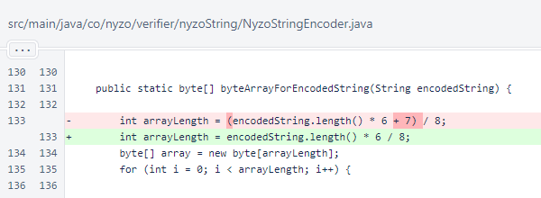
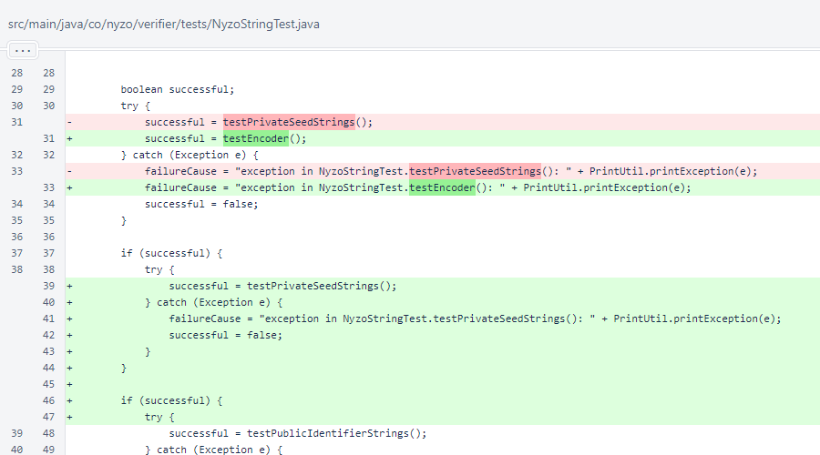
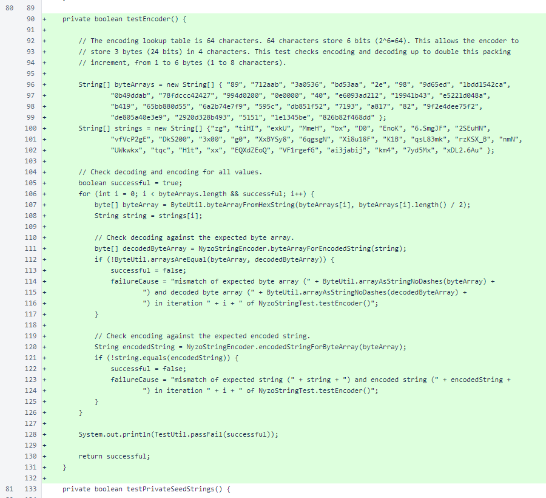

Nyzo 641: NyzoStringEncoder fix
Nyzo version 641
(commit on GitHub) corrects a bug in
NyzoStringEncoder.
This version does not affect any run modes, but it improves robustness of the code.
We are currently working on improving adoption of Nyzo. This includes work on the
NyzoScript functionality, and it also includes development of the
WordPress plugin to bring Nyzo Micropay to WordPress.
In development of tests for the WordPress plugin, we updated some equivalent tests in the Java codebase. In these
test updates, we identified and fixed an issue with the NyzoStringEncoder.
This version includes the test update and its resulting fix.
The fix is in NyzoStringEncoder.byteArrayForEncoded
String(). In this method, the result array length is rounded down instead of up. Rounding up was never a
problem in current decoder use cases due to variable-length checksums in Nyzo strings, but it was a problem in the
more general case of decoding arrays of arbitrary lengths.

NyzoStringTest.testEncoder() was added to
NyzoStringTest.run().

NyzoStringTest.testEncoder() tests encoding and decoding of 30 byte
arrays to and from Nyzo string encodings. These are evenly distributed with byte array lengths from 1 to 6 bytes.
When this method was first written, byte arrays of length 3 and byte arrays of length 6 decoded properly. However,
lengths of 1, 2, 4, and 5 all failed with exceptions due to out-of-range indices with the previous rounding. With
updated rounding, all lengths encode and decode properly with correct values and correct lengths.
